Builds Genéricas
Essas builds funcionam em qualquer killer/assasino, todas elas tem um certo foco, que será informado na descrição de cada uma. Caso queria saber como jogar com elas recomendo acessar a aba Dicas e videos
Build de iniciante
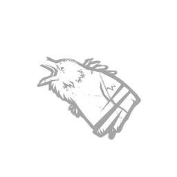
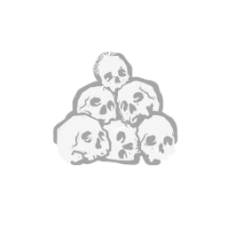
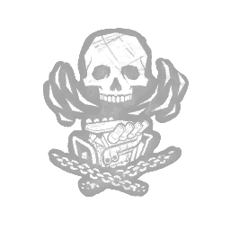
Build focada em vantagens de graça, mas mesmo assim mantendo o equilibrio de uma build padrão:
- Espiões das sombras - Notifica quando corvos próximos são perturbados.
- Açougueiro desleixado - Sobreviventes sangram e demoram mais para se curar.
- Feitiço: Ninguém escapa da morte - Todos ficam Expostos após o último gerador, se houver totem ativo.
- Impasse/Sem limites - Quando um gerador e reparado o gerador com mais progresso é bloqueado por 25 segundos.
Build anti-gen padrão
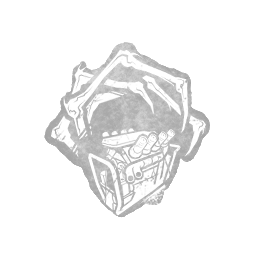
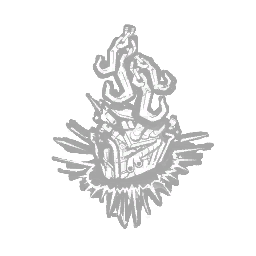
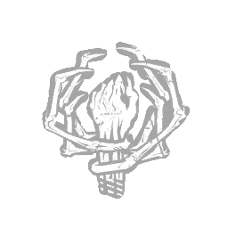
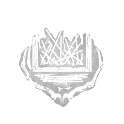
Esta build anti-gen foca em controle de geradores com as seguintes perks:
- Intervenção Corrompida - Bloqueia os 3 geradores mais distantes por 120 segundos (essencial no início da partida). (Pertence à Praga)
- Ressonância da Dor - Cria 4 ganchos do tormento. Ao enganchar: o gen mais avançado perde 20% de progresso. (Pertence à Artista)
- Abraço Sinistro - No primeiro gancho: bloqueia gens por 10s ao se afastar. No último sobrevivente: bloqueia por 40s. (Pertence à Artista)
- Enganei Você - Bloqueia janelas/pallets após vault. Pode ser substituída por outra perk de perseguição. (Pertence ao Palhaço)
Build Totem
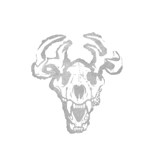
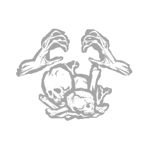
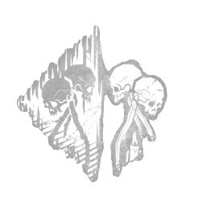
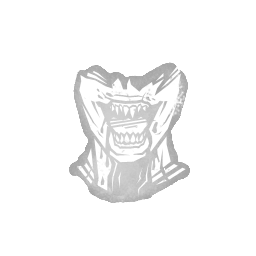
Build focada em totens, principalmente no devour, que tem um grande potencial:
- Feitiço: Emoção da Caçada -Atrasa ações em totems, para cada totem que você tem. (Gratuito)
- Feitiço: Pentimento - Restaura totems apagados com efeitos negativos aos sobreviventes (velocidade de cura e reparo reduzida em 20%). (Pertence à Artista)
- Feitiço: Imortal - Substitui totems destruídos e revela sobreviventes ao redor do totem. (Pertence ao Flagelo)
- Feitiço: Devorar esperança - Ganha bônus conforme sobreviventes são resgatados longe de você: mais velocidade, status Exposto e até possibilidade de matar instantaneamente.(Pertence à Bruxa)
Build anti-loop
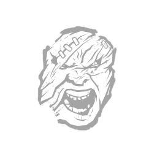
Build focada unicamente em perseguições, mais focada em ser engraçada e forte ao mesmo tempo:
- Resistência – Reduz efeitos de atordoamento e lentidão.
- Força Brutal – Acelera destruição de paletes e geradores.
- Nascido na Luz – Imune a lanternas e efeitos de ofuscamento.
- Enganei Você – Bloqueia Janelas quando você pular elas.